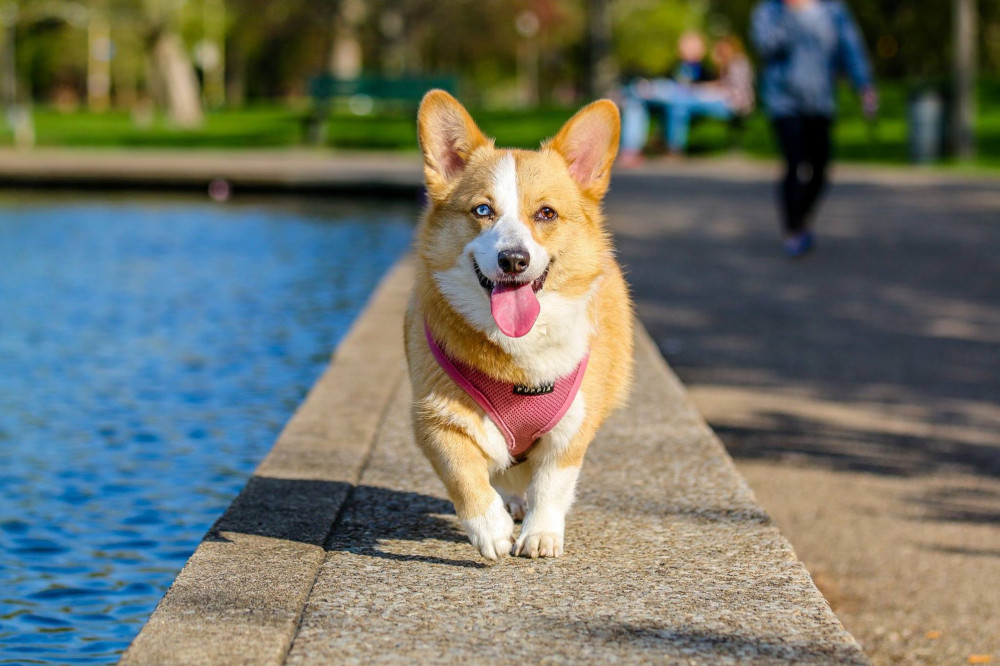
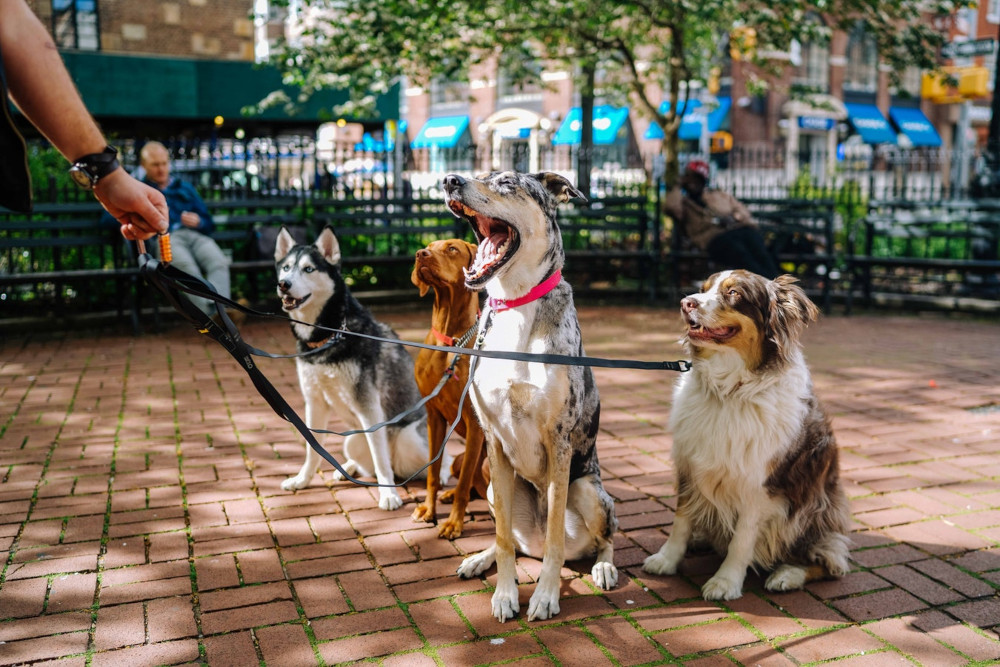

About Doggie Walks
Doggie walks are committed to ensuring that your pet is safe, healthy and active. Our canine friends should feel different terrain under their paws, hear different sounds and see different sights and have a decent sniff about!
While dogs need daily exercise in order to stay healthy, for many people it's not always possible to walk their pets regularly. That's why we established Doggie Walks, to help people across Lancashire and Merseyside ensure their dogs live happy lives.
How it works
Your dog will be collected from your home and taken to a local park for a walk with their pals. Exercise, mental stimulation, socialisation and play make for a happier, calmer and more contented dog. With a maximum of 4 dogs per walk you can be sure that your best friend is getting all the attention they deserve.
However, we also accept drop-offs at your nearest local branch. You can find out more about where your nearest branch is via our contact page.